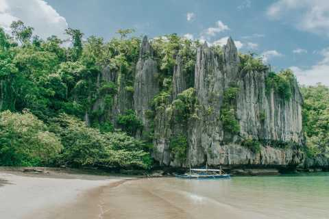
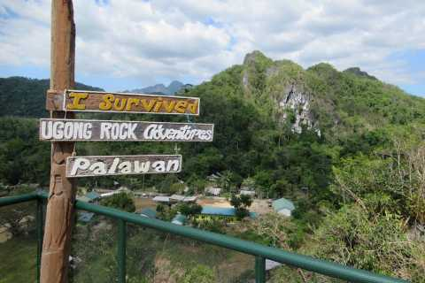
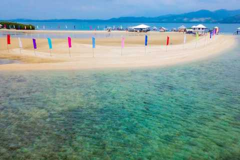
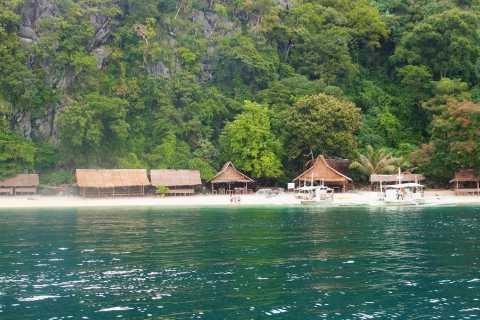
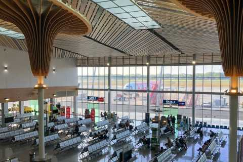

History
Pre-Colonial Era: Palawan was inhabited by indigenous peoples like the Tagbanua, Palawano, and Batak long before Spanish colonization. These communities thrived through fishing, agriculture, and trade. Spanish Colonization: In the 16th century, Spanish explorers arrived in Palawan. The Spaniards encountered resistance from the indigenous tribes, but eventually established settlements, including the town of Cuyo in 1622. However, much of Palawan remained relatively untouched due to its rugged terrain and the resistance of indigenous groups. American Occupation: After the Spanish-American War in 1898, the Philippines fell under American control. Palawan became a part of the American-controlled Philippine Islands. During this period, Palawan's strategic location was recognized, leading to the establishment of military installations. World War II: Palawan played a significant role in World War II. The Japanese occupied the island, and it was a site of several battles between Japanese and American forces. One of the most infamous events was the Palawan Massacre in 1944, where hundreds of American prisoners of war were killed by the Japanese. Post-War Period: After the war, Palawan, like the rest of the Philippines, gained independence from the United States. It became a province of the newly established Republic of the Philippines in 1946. Modern Era: In recent decades, Palawan has seen significant development in tourism, owing to its stunning natural beauty, pristine beaches, and diverse marine life. However, this development has also brought challenges such as environmental degradation and cultural preservation concerns.
Geography
Islands: Palawan is an archipelago consisting of numerous islands, the largest of which is also called Palawan Island. Other significant islands include Busuanga, Coron, Culion, and Linapacan. These islands are surrounded by the Sulu Sea to the east, the South China Sea to the west, and the Palawan Sea to the north. Mountains and Forests: The interior regions of Palawan are dominated by mountain ranges and dense forests. The Calamian and Cuyo mountain ranges traverse the northern part of the province, while the Central Palawan mountain range runs through the center. These mountains are covered with tropical rainforests, home to diverse flora and fauna, including endemic species. Coastline: Palawan is known for its stunning coastline, which stretches for hundreds of kilometers. Along the coast, you'll find a mix of sandy beaches, limestone cliffs, and mangrove forests. The province's coastline is indented with numerous bays, coves, and inlets, providing sheltered harbors and scenic vistas. Underground River: One of Palawan's most famous natural attractions is the Puerto Princesa Underground River, located within the Puerto Princesa Subterranean River National Park. This river flows underground for approximately 8.2 kilometers (5.1 miles) through a limestone cave before emerging into the South China Sea. It is recognized as a UNESCO World Heritage Site and one of the New Seven Wonders of Nature. Coral Reefs and Marine Life: Palawan is renowned for its rich marine biodiversity. The waters surrounding the province are home to vibrant coral reefs, teeming with colorful fish, sea turtles, and other marine creatures. Popular diving and snorkeling spots include Tubbataha Reefs Natural Park, El Nido, and Coron. Island Hopping Destinations: Palawan's island-hopping destinations, such as El Nido and Coron, offer visitors the chance to explore picturesque islands, hidden lagoons, and secluded beaches. These destinations are characterized by towering limestone karsts, crystal-clear waters, and thriving marine ecosystems.
Demographics
Economy
Tourism: Tourism is a significant driver of Palawan's economy. The province is renowned for its stunning natural beauty, including pristine beaches, crystal-clear waters, limestone cliffs, and diverse marine life. Palawan's attractions, such as the Puerto Princesa Underground River, El Nido, and Coron, attract both domestic and international tourists, generating revenue from accommodations, tours, restaurants, and souvenir shops. Agriculture: Agriculture remains an essential sector in Palawan's economy, providing livelihoods for many residents. The province's fertile land supports the cultivation of rice, corn, coconut, and various fruits and vegetables. Additionally, fishing and aquaculture play a vital role, with Palawan's coastal waters abundant in marine resources. Mining: Palawan has significant mineral reserves, including nickel, chromite, and copper. Mining activities contribute to the provincial economy, providing employment and revenue. However, mining operations also raise environmental concerns, particularly regarding habitat destruction and water pollution. Trade and Commerce: Palawan's strategic location in the western Philippines makes it a hub for trade and commerce. The province's ports facilitate the transportation of goods, both domestically and internationally. Puerto Princesa City, the provincial capital, serves as a commercial center, hosting markets, shopping centers, and business establishments.
Tourism and Attractions
Palawan offers a plethora of tourism attractions that cater to a wide range of interests, from pristine beaches and crystal-clear waters to vibrant coral reefs and lush rainforests. Here are some of the top tourism attractions in Palawan:
- Sabang Wharf 
- Ugong Rock 
- Luli Island 
- Banul Beach 
- Puerto Princesa International Airport 
These are just a few of the many attractions that Palawan has to offer. Whether you're seeking adventure, relaxation, or cultural experiences, Palawan's diverse tourism offerings are sure to delight visitors of all ages.
Schools and Universities
- Western Philippines University
- Philippine Normal University
- Pangasinan State University
- Western Mindanao State University
- Tarlac State University


These are just a few examples of the educational institutions in Palawan. The province continues to invest in education to ensure that its residents have access to quality learning opportunities and to support its development goals.